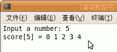

C 编程基础教程
作者：TeliuTe 来源：基础教程网
十、堆内存、 返回目录
堆内存可以动态分配所需的内存空间大小，而数组必须要在程序运行前指定空间大小，下面我们来看一个练习；
1、启动 Geany
1）点菜单“应用程序－编程－Geany”启动 Geany ，新建一个 c 源程序；
2）点菜单“文件－另存为”命令，以“heap”为文件名，保存文件到自己的文件夹；
2、分配堆内存
1）使用 mallac() 函数来获得需要的内存大小，它返回内存的起始地址，在开头先包含对应的库文件；
|
#include <stdio.h> #include <malloc.h> |
接着输入下面的代码，准备要用到的变量，第三个是指针变量，存放将来内存地址：
|
int i = 0; int a = 0; int *score = NULL; |
2）接下来输入一个数给 a，指定要申请的内存空间大小；
|
printf ("Input a number: "); scanf ("%d",&a); |
3）接下来申请内存大小，如果成功了，就把地址给 score 指针变量，否则给它的是“空” NULL；
| score = (int *) malloc(a * sizeof(int)); |
4）如果 score 不为空，就给它的各个单元赋值 i ，内存一般是连续的，可以当数组来使用；
|
for (i=0; i<a; i++) { score[i] = i; } |
5）赋值完毕以后，再显示一下各个单元的值；
| printf ("score[%d%s", a, "] = "); for (i=0; i<a; i++) { printf ("%d%s",score[i]," "); } |
6）使用完毕后，归还申请的内存，释放内存后，score 指针也应该让指向空 NULL；
|
free(score); score = NULL; |
7）编译、生成、运行后，显示分配的内存单元和值；

|
#include <stdio.h> #include <malloc.h> int main(int argc, char** argv) { int i = 0; int a = 0; int *score = NULL; printf ("Input a number: "); scanf ("%d",&a); score = (int *) malloc(a * sizeof(int)); if (score != NULL) { for (i=0; i<a; i++) { score[i] = i; } printf ("score[%d%s", a, "] = "); for (i=0; i<a; i++) { printf ("%d%s",score[i]," "); } free(score); score = NULL; } return 0; } |
本节学习了堆内存使用的基本操作，如果你成功地完成了练习，请继续学习；
本教程由86团学校TeliuTe制作|著作权所有
基础教程网：http://teliute.org/
美丽的校园……
转载和引用本站内容，请保留作者和本站链接。